We are Team Nova: four students with four MacBooks. Each of us owns one machine and one part of the system.
Member
Machine
IP address
Part of the system
Hrishabh Prajapati
Mac 1
10.7.8.113
Private DNS server (dnsmasq, UDP port 53). It turns the name app.nova.test into an IP address.
Deepanshu
Mac 2
10.7.7.58
Edge server (nginx, TCP port 443). It handles HTTPS and shares the requests between the two backends.
Kanishk Sharma
Mac 3
10.7.19.171
Backend A (Node.js, TCP port 3001).
Adarsh Vashistha
Mac 4
10.7.20.75
Backend B (Node.js, TCP port 3002). Mac 4 is also our test client.
What we built
A small private web service that runs only on our own Wi-Fi network. A user opens https://app.nova.test and gets an answer from one of two backend servers, without ever knowing their addresses.
Figure 1. The four machines and the path of one request.
Example. Mac 4 opens https://app.nova.test. First, Mac 1 answers that the name means 10.7.7.58. Second, Mac 4 connects to 10.7.7.58, which is Mac 2, over HTTPS. Third, Mac 2 passes the request to Backend A or Backend B and sends the reply back.
Setup flow
We set the system up from the inside out. The backends come first, because nginx needs something to forward to. DNS and nginx come next. The clients come last, because they need both. The next page goes through the six steps, with the commands we used and the check that proved each one worked.
1 · Networkall four Macs
→
2 · BackendsMac 3, Mac 4
→
3 · DNSMac 1
→
4 · EdgeMac 2
→
5 · Clientsany Mac
→
6 · Testfrom a client
Step 1 · All four Macs
Join one network
All four Macs join the same Wi-Fi. Each one finds its own IP address and pings the other three.
ipconfig getifaddr en0 # this Mac's IP address
ping -c 4 10.7.8.113 # test another Mac
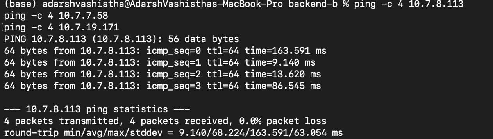
Figure 2. Check: Mac 4 pings Mac 1 with 0% packet loss.
MAC_4/evidence/02_lan_ping_reachability_all_macs.jpg
Step 2 · Mac 3 and Mac 4
Start the two backends
Each backend is one Node.js file. There is nothing to install.
cd MAC_3/Backend_A && node server.js # on Mac 3
cd MAC_4/Backend_B && node server.js # on Mac 4
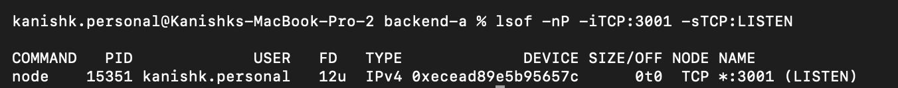
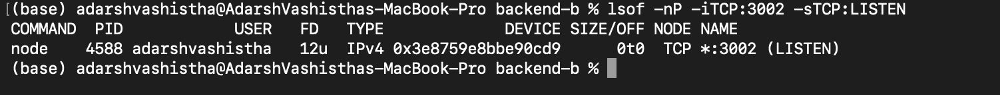
Figure 3. Check: Backend A listens on *:3001, Backend B on *:3002.
MAC_3/evidence/mac-3_ss/Backend_A_listening_on_port_3001_not_127001.jpeg · MAC_4/evidence/03_backend_b_port_3002_listen.jpg
Step 3 · Mac 1
Start the DNS server
dnsmasq is installed, given our config file and started as a service.
Figure 5. Check: nginx -t says the configuration is valid, and nginx listens on TCP port 443.
MAC_2/04_nginx_config_syntax_test.png · MAC_2/05_nginx_process_and_port_443.png
Step 5 · Every client Mac
Prepare the clients
Each client is told to use Mac 1 as its DNS server and to trust our certificate authority.
Figure 6. Check on Mac 4: the DNS server is 10.7.8.113 and dig returns 10.7.7.58.
MAC_4/evidence/05_dns_dig_app_nova_test_success.png
Step 6 · Mac 4 as the client
Test from start to finish
Six requests go to https://app.nova.test. All return 200 OK, and the backends take turns.
for i in {1..6}; do curl -sS -i https://app.nova.test/ \
| grep -E "HTTP/|X-Backend"; done
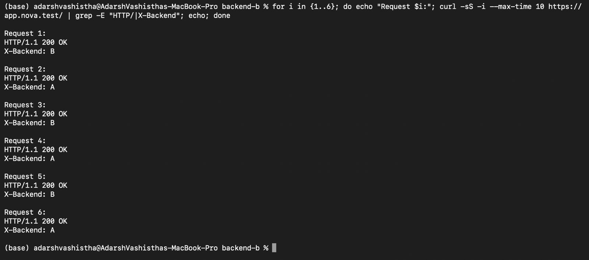
Figure 7. Check: six requests, all 200 OK. X-Backend alternates B, A, B, A, B, A.
MAC_4/evidence/07_load_balancing_round_robin_alternation.jpg
Part 2
How the configuration works
The whole system is controlled by three small pieces of configuration: one on the DNS server, one in each backend program, and one on the edge server. For each piece we show the setting, explain it in simple words, and give a real example.
1. DNS server on Mac 1
Three lines in /opt/homebrew/etc/dnsmasq.conf do all the work.
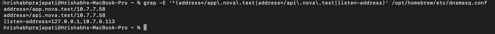
Figure 8. The three configuration lines, printed on Mac 1.
MAC_1/evidence/MAC1_SS03_DNSMASQ_CONFIG.png
Setting
In simple words
address=/app.nova.test/10.7.7.58
When someone asks “where is app.nova.test?”, answer 10.7.7.58. That is Mac 2.
address=/api.nova.test/10.7.7.58
Give the same answer for the name api.nova.test.
listen-address=127.0.0.1,10.7.8.113
Listen on Mac 1's Wi-Fi address, so that other Macs can ask. With only 127.0.0.1 here, only Mac 1 itself could ask.
Client DNS server = 10.7.8.113
This is set on every client Mac. It tells the client to send its DNS questions to Mac 1.
Example. Mac 2 runs dig app.nova.test.
The ANSWER SECTION says 10.7.7.58. This is the first config line at work.
The SERVER line says 10.7.8.113#53. So the answer came from Mac 1, on port 53.
status: NOERROR means the lookup worked.
Figure 9. Mac 2 resolves the name through Mac 1.
MAC_2/06_dns_dig_app_nova_test.png
2. Backends on Mac 3 and Mac 4
The backend settings are a few lines in each server.js. These are selected lines from Backend A. Backend B uses the same settings with port 3002 and the label B.
const HOST = '0.0.0.0'; // all interfaces, so other Macs on the LAN can reach it
const PORT = 3001;
const BACKEND = 'A';
⋮
const all = { 'X-Backend': BACKEND, ...headers };
⋮
const cacheHeaders = { 'Cache-Control': 'public, max-age=60', ETag: HOME_ETAG };
Setting
In simple words
HOST = '0.0.0.0'
Accept connections on every network interface. With 127.0.0.1, only the same Mac could connect, and nginx on Mac 2 would not reach the backend.
PORT = 3001
The port number of the service. Backend B uses 3002. nginx must use the same numbers.
'X-Backend': BACKEND
Every reply carries the label X-Backend: A or X-Backend: B. This is how we can see which backend answered.
'Cache-Control', ETag
The home page may be reused for 60 seconds. The ETag is a fingerprint of the page. The live /api/status reply is marked no-store instead.
Example. On Mac 3, curl -i http://localhost:3001/ returns 200 OK with X-Backend: A, Cache-Control: public, max-age=60 and an ETag. The status endpoint returns Cache-Control: no-store.
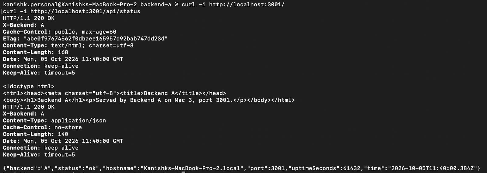
Figure 10. Backend A answering on both endpoints with its label and cache headers.
MAC_3/evidence/mac-3_ss/both_endpoints_return_200_with_X-Backend_A.jpeg
3. Edge server on Mac 2
nginx reads one file, nova.conf. Figure 11 shows the file as it is installed on Mac 2. It is the same as nginx/nova.conf in our repository.
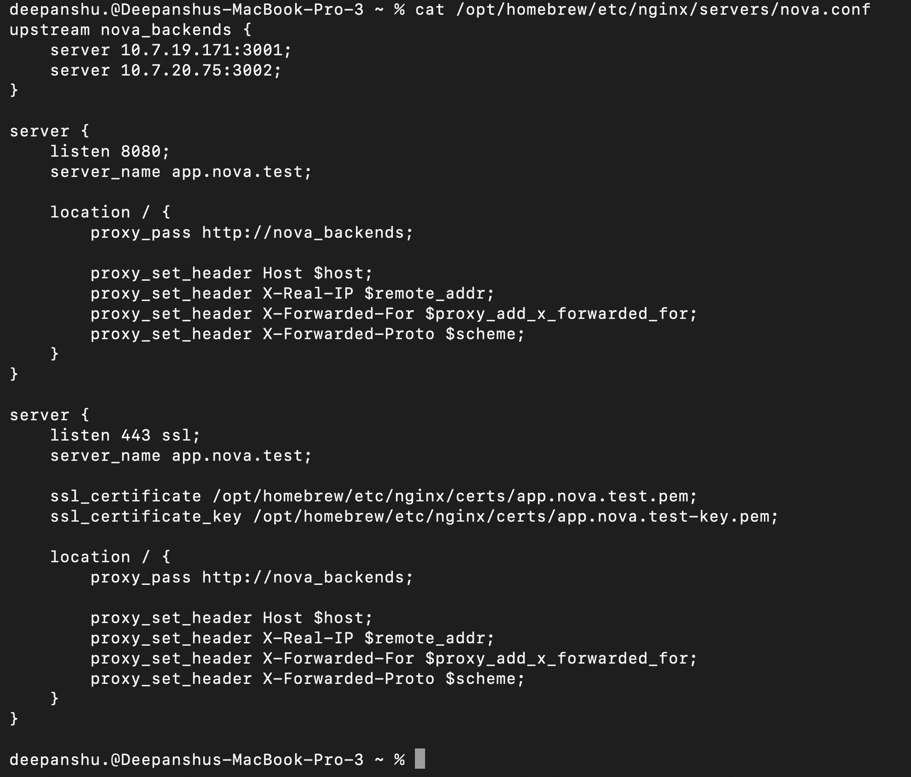
Figure 11. The nginx configuration on Mac 2.
MAC_2/03_nginx_virtual_host_config.png
Setting
In simple words
upstream
The list of backends: Mac 3 on port 3001 and Mac 4 on port 3002. No method is written, so nginx uses its default, round robin: the backends take turns.
listen 443 ssl
Accept HTTPS connections on port 443.
server_name
This block handles requests for the name app.nova.test.
ssl_certificate ssl_certificate_key
The certificate and its private key. nginx uses them to prove who it is and to encrypt the connection.
proxy_pass
Pass every request to the backend group, over plain HTTP.
proxy_set_header
Tell the backend the original host name, the client's address and the protocol.
listen 8080
The first block offers the same site on port 8080 without encryption.
Example. Two requests are sent to https://app.nova.test/. The first is answered by Backend B and the second by Backend A. That is the upstream block at work. Both replies still carry the backend's own Cache-Control and ETag, so nginx passes the headers through unchanged.
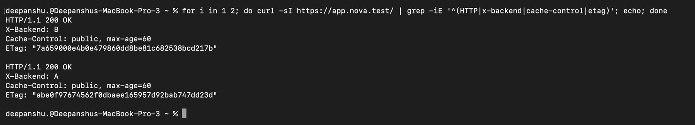
Figure 12. Two requests through the edge, run on Mac 2: one answer from each backend.
MAC_2/09_http_response_headers_and_etag.png
4. The HTTPS certificate
nginx needs a certificate for the name app.nova.test. We made it on Mac 2 with mkcert:
mkcert -install # creates our own local certificate authority (CA)
mkcert app.nova.test # creates app.nova.test.pem and app.nova.test-key.pem
These are exactly the two files named in the nginx configuration. A client accepts the certificate only if it trusts our CA, so the public CA certificate (MAC_2/certs/mkcert-rootCA.crt) must be trusted on each client Mac. The private keys stay on Mac 2 and are not in the repository.
5. Example: one request from start to finish
Figure 13 is one real request from Mac 4, run with curl -v https://app.nova.test/ and without the -k flag. The table below links each part of the output to the setting that causes it.
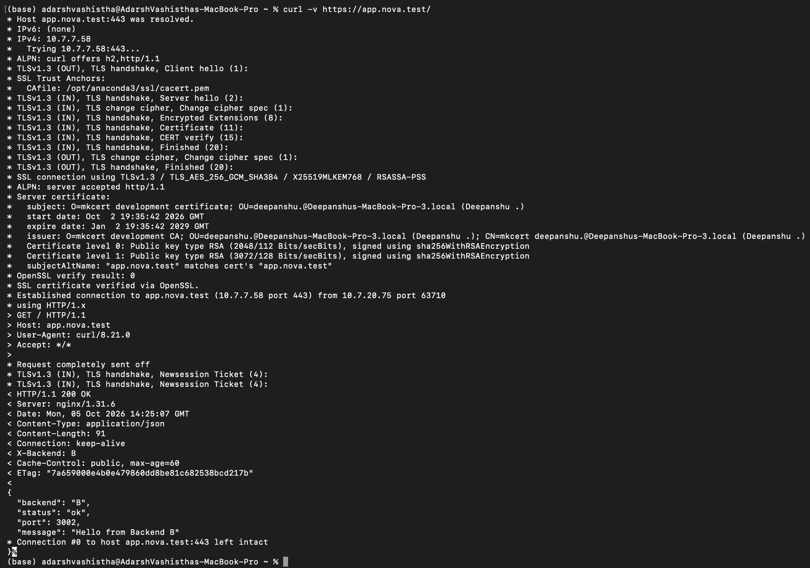
Figure 13. One complete request from Mac 4. On Mac 4, curl is the Anaconda build and checks certificates against its own CA file.
MAC_4/evidence/06_https_curl_v_success.png
In the output
What it means
Setting behind it
IPv4: 10.7.7.58
The name was turned into Mac 2's address.
The dnsmasq record on Mac 1, and the DNS server setting on Mac 4.
Trying 10.7.7.58:443
Mac 4 connects to Mac 2 on the HTTPS port.
listen 443 ssl
SSL connection using TLSv1.3
The connection is encrypted.
ssl_certificate and ssl_certificate_key
subjectAltName … matches SSL certificate verified
The certificate is for the right name and is trusted.
The mkcert certificate for app.nova.test, and the trusted CA on the client.
Server: nginx/1.31.6
The reply came through nginx.
The port 443 block in nginx, which forwards with proxy_pass.
X-Backend: B
This request was served by Backend B.
upstream chose Mac 4, and the backend added its label.
Cache-Control: public, max-age=60
The page may be cached for 60 seconds.
The backend's cache setting, passed through by nginx.
Part 3 · D3
Failure demonstration
A system is understood best when it breaks. We broke one setting at a time, on purpose, and watched which layer failed and which layers kept working. Every test followed the same four steps.
1 · Checkit works
→
2 · Breakone setting
→
3 · Observewhat fails, what still works
→
4 · Restoreand check again
Failure 1: wrong DNS server on the client
Setting we broke
The DNS server setting on Mac 4. We changed it from 10.7.8.113 (Mac 1) to the public server 8.8.8.8 and cleared the DNS cache.
What we saw
dig returned NXDOMAIN, which means “this name does not exist”. curl stopped with “Could not resolve host”. But ping 10.7.7.58 still got 4 replies out of 4.
Why
8.8.8.8 is a public DNS server. It has never heard of our private name. The network itself was fine, so Mac 4 could still reach Mac 2 by its IP address.
Lesson
DNS and IP are independent. A name lookup can fail while the network still works.
Restore
We set the DNS server back to 10.7.8.113. dig returned 10.7.7.58 again and curl returned 200 OK. Working at 20:20, broken at 20:23, restored at 20:24 on 5 October 2026.
A · Before DNS server is 10.7.8.113, answer is 10.7.7.58
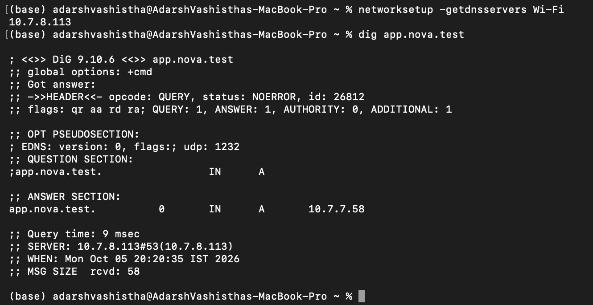
B · Broken DNS set to 8.8.8.8, answer is NXDOMAIN
C · Broken curl fails, but ping to Mac 2 works
D · Restored lookup works, curl returns 200 OK
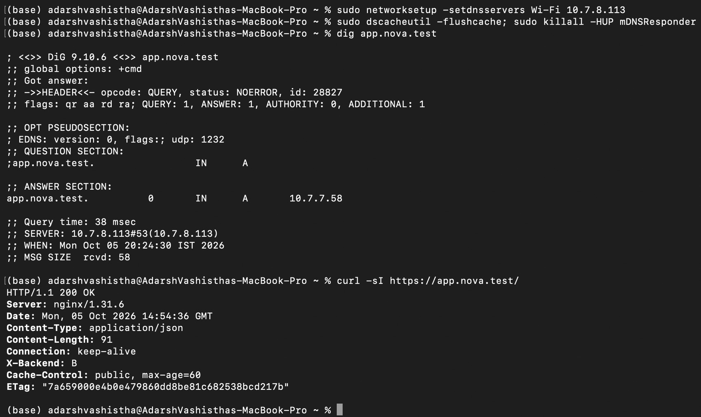
Figure 14. Failure 1 on Mac 4, from working to broken to restored.
MAC_4/evidence/15_failure_dns_1_before.png · 16_failure_dns_2_broken.png · 17_failure_dns_3_restored.png
Failure 2: DNS record points to a wrong IP address
Setting we broke
The app.nova.test record in dnsmasq.conf on Mac 1. We changed its address from 10.7.7.58 to 10.7.20.99 and restarted dnsmasq (Figure 15).
What we saw
dig returned NOERROR with the answer 10.7.20.99. There was no error at all, but the answer was wrong. ping 10.7.7.58 still got 2 replies out of 2, so Mac 2 was still running.
Why
DNS gives back whatever is written in its records. It does not check that the address belongs to the right machine.
Lesson
DNS is a directory, not a connection. A wrong record sends clients to the wrong place, even when every server is healthy.
Restore
We changed the record back to 10.7.7.58 and restarted dnsmasq. dig returned 10.7.7.58 again. Working at 21:42, broken at 21:45, restored at 21:46 on 5 October 2026.
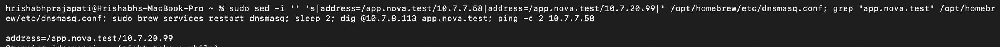
Figure 15. The change on Mac 1: one sed command replaces 10.7.7.58 with 10.7.20.99.
MAC_1/evidence/MAC1_SS08_WRONG_DNS_RECORD.png
A · Before the answer is 10.7.7.58
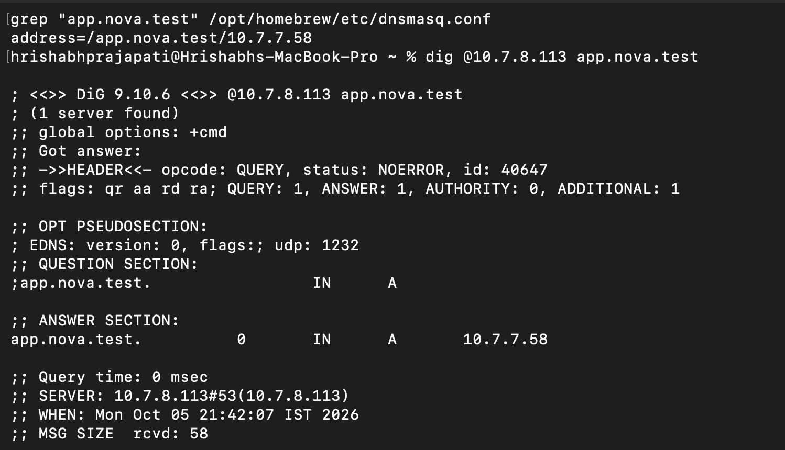
B · Broken the answer is 10.7.20.99
C · Broken Mac 2 still answers ping
D · Restored 10.7.7.58 again
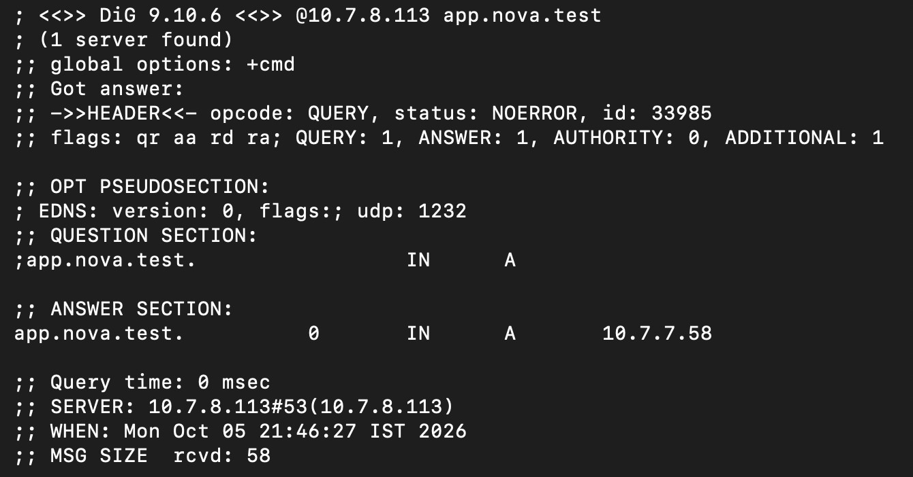
Figure 16. Failure 2 on Mac 1, from working to broken to restored.
MAC_1/evidence/MAC1_SS08a_DNS_RECORD_BEFORE.png · MAC1_SS08_WRONG_DNS_RECORD.png · MAC1_SS08b_DNS_RECORD_RESTORED.png
Three more scenarios
The project brief lists five failure scenarios. These three have not been captured as screenshots yet, so the table gives the expected result.
Scenario
Expected result
One backend is stopped
nginx cannot connect to the stopped backend and sends every request to the other one. The client still gets 200 OK, always with the same X-Backend value.
Both backends are stopped
DNS and HTTPS to Mac 2 still work, but nginx has no backend to use and returns 502 Bad Gateway.
Wrong destination port
Mac 2 still answers ping, but a connection to a port where nothing listens is refused or times out. An IP address and a port are separate things.